Note
Click here to download the full example code
Audio Data Augmentation¶
torchaudio provides a variety of ways to augment audio data.
# When running this tutorial in Google Colab, install the required packages
# with the following.
# !pip install torchaudio
import torch
import torchaudio
import torchaudio.functional as F
print(torch.__version__)
print(torchaudio.__version__)
Out:
1.10.0+cpu
0.10.0+cpu
Preparing data and utility functions (skip this section)¶
#@title Prepare data and utility functions. {display-mode: "form"}
#@markdown
#@markdown You do not need to look into this cell.
#@markdown Just execute once and you are good to go.
#@markdown
#@markdown In this tutorial, we will use a speech data from [VOiCES dataset](https://iqtlabs.github.io/voices/), which is licensed under Creative Commos BY 4.0.
#-------------------------------------------------------------------------------
# Preparation of data and helper functions.
#-------------------------------------------------------------------------------
import math
import os
import requests
import matplotlib.pyplot as plt
from IPython.display import Audio, display
_SAMPLE_DIR = "_assets"
SAMPLE_WAV_URL = "https://pytorch-tutorial-assets.s3.amazonaws.com/steam-train-whistle-daniel_simon.wav"
SAMPLE_WAV_PATH = os.path.join(_SAMPLE_DIR, "steam.wav")
SAMPLE_RIR_URL = "https://pytorch-tutorial-assets.s3.amazonaws.com/VOiCES_devkit/distant-16k/room-response/rm1/impulse/Lab41-SRI-VOiCES-rm1-impulse-mc01-stu-clo.wav"
SAMPLE_RIR_PATH = os.path.join(_SAMPLE_DIR, "rir.wav")
SAMPLE_WAV_SPEECH_URL = "https://pytorch-tutorial-assets.s3.amazonaws.com/VOiCES_devkit/source-16k/train/sp0307/Lab41-SRI-VOiCES-src-sp0307-ch127535-sg0042.wav"
SAMPLE_WAV_SPEECH_PATH = os.path.join(_SAMPLE_DIR, "speech.wav")
SAMPLE_NOISE_URL = "https://pytorch-tutorial-assets.s3.amazonaws.com/VOiCES_devkit/distant-16k/distractors/rm1/babb/Lab41-SRI-VOiCES-rm1-babb-mc01-stu-clo.wav"
SAMPLE_NOISE_PATH = os.path.join(_SAMPLE_DIR, "bg.wav")
os.makedirs(_SAMPLE_DIR, exist_ok=True)
def _fetch_data():
uri = [
(SAMPLE_WAV_URL, SAMPLE_WAV_PATH),
(SAMPLE_RIR_URL, SAMPLE_RIR_PATH),
(SAMPLE_WAV_SPEECH_URL, SAMPLE_WAV_SPEECH_PATH),
(SAMPLE_NOISE_URL, SAMPLE_NOISE_PATH),
]
for url, path in uri:
with open(path, 'wb') as file_:
file_.write(requests.get(url).content)
_fetch_data()
def _get_sample(path, resample=None):
effects = [
["remix", "1"]
]
if resample:
effects.extend([
["lowpass", f"{resample // 2}"],
["rate", f'{resample}'],
])
return torchaudio.sox_effects.apply_effects_file(path, effects=effects)
def get_sample(*, resample=None):
return _get_sample(SAMPLE_WAV_PATH, resample=resample)
def get_speech_sample(*, resample=None):
return _get_sample(SAMPLE_WAV_SPEECH_PATH, resample=resample)
def plot_waveform(waveform, sample_rate, title="Waveform", xlim=None, ylim=None):
waveform = waveform.numpy()
num_channels, num_frames = waveform.shape
time_axis = torch.arange(0, num_frames) / sample_rate
figure, axes = plt.subplots(num_channels, 1)
if num_channels == 1:
axes = [axes]
for c in range(num_channels):
axes[c].plot(time_axis, waveform[c], linewidth=1)
axes[c].grid(True)
if num_channels > 1:
axes[c].set_ylabel(f'Channel {c+1}')
if xlim:
axes[c].set_xlim(xlim)
if ylim:
axes[c].set_ylim(ylim)
figure.suptitle(title)
plt.show(block=False)
def print_stats(waveform, sample_rate=None, src=None):
if src:
print("-" * 10)
print("Source:", src)
print("-" * 10)
if sample_rate:
print("Sample Rate:", sample_rate)
print("Shape:", tuple(waveform.shape))
print("Dtype:", waveform.dtype)
print(f" - Max: {waveform.max().item():6.3f}")
print(f" - Min: {waveform.min().item():6.3f}")
print(f" - Mean: {waveform.mean().item():6.3f}")
print(f" - Std Dev: {waveform.std().item():6.3f}")
print()
print(waveform)
print()
def plot_specgram(waveform, sample_rate, title="Spectrogram", xlim=None):
waveform = waveform.numpy()
num_channels, num_frames = waveform.shape
time_axis = torch.arange(0, num_frames) / sample_rate
figure, axes = plt.subplots(num_channels, 1)
if num_channels == 1:
axes = [axes]
for c in range(num_channels):
axes[c].specgram(waveform[c], Fs=sample_rate)
if num_channels > 1:
axes[c].set_ylabel(f'Channel {c+1}')
if xlim:
axes[c].set_xlim(xlim)
figure.suptitle(title)
plt.show(block=False)
def play_audio(waveform, sample_rate):
waveform = waveform.numpy()
num_channels, num_frames = waveform.shape
if num_channels == 1:
display(Audio(waveform[0], rate=sample_rate))
elif num_channels == 2:
display(Audio((waveform[0], waveform[1]), rate=sample_rate))
else:
raise ValueError("Waveform with more than 2 channels are not supported.")
def get_rir_sample(*, resample=None, processed=False):
rir_raw, sample_rate = _get_sample(SAMPLE_RIR_PATH, resample=resample)
if not processed:
return rir_raw, sample_rate
rir = rir_raw[:, int(sample_rate*1.01):int(sample_rate*1.3)]
rir = rir / torch.norm(rir, p=2)
rir = torch.flip(rir, [1])
return rir, sample_rate
def get_noise_sample(*, resample=None):
return _get_sample(SAMPLE_NOISE_PATH, resample=resample)
Applying effects and filtering¶
torchaudio.sox_effects allows for directly applying filters similar to
those available in sox to Tensor objects and file object audio sources.
There are two functions for this:
torchaudio.sox_effects.apply_effects_tensorfor applying effects to Tensor.torchaudio.sox_effects.apply_effects_filefor applying effects to other audio sources.
Both functions accept effect definitions in the form
List[List[str]].
This is mostly consistent with how sox command works, but one caveat is
that sox adds some effects automatically, whereas torchaudio’s
implementation does not.
For the list of available effects, please refer to the sox documentation.
Tip If you need to load and resample your audio data on the fly,
then you can use torchaudio.sox_effects.apply_effects_file with
effect "rate".
Note apply_effects_file accepts a file-like object or path-like
object. Similar to torchaudio.load, when the audio format cannot be
inferred from either the file extension or header, you can provide
argument format to specify the format of the audio source.
Note This process is not differentiable.
# Load the data
waveform1, sample_rate1 = get_sample(resample=16000)
# Define effects
effects = [
["lowpass", "-1", "300"], # apply single-pole lowpass filter
["speed", "0.8"], # reduce the speed
# This only changes sample rate, so it is necessary to
# add `rate` effect with original sample rate after this.
["rate", f"{sample_rate1}"],
["reverb", "-w"], # Reverbration gives some dramatic feeling
]
# Apply effects
waveform2, sample_rate2 = torchaudio.sox_effects.apply_effects_tensor(
waveform1, sample_rate1, effects)
plot_waveform(waveform1, sample_rate1, title="Original", xlim=(-.1, 3.2))
plot_waveform(waveform2, sample_rate2, title="Effects Applied", xlim=(-.1, 3.2))
print_stats(waveform1, sample_rate=sample_rate1, src="Original")
print_stats(waveform2, sample_rate=sample_rate2, src="Effects Applied")
- 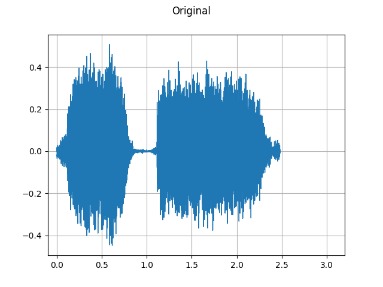
- 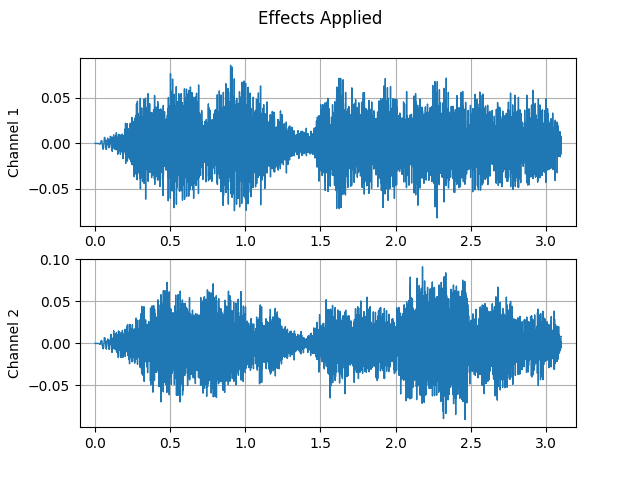
Out:
----------
Source: Original
----------
Sample Rate: 16000
Shape: (1, 39680)
Dtype: torch.float32
- Max: 0.507
- Min: -0.448
- Mean: -0.000
- Std Dev: 0.122
tensor([[ 0.0007, 0.0076, 0.0122, ..., -0.0049, -0.0025, 0.0020]])
----------
Source: Effects Applied
----------
Sample Rate: 16000
Shape: (2, 49600)
Dtype: torch.float32
- Max: 0.091
- Min: -0.091
- Mean: -0.000
- Std Dev: 0.021
tensor([[0.0000, 0.0000, 0.0000, ..., 0.0069, 0.0058, 0.0045],
[0.0000, 0.0000, 0.0000, ..., 0.0085, 0.0085, 0.0085]])
Note that the number of frames and number of channels are different from those of the original after the effects are applied. Let’s listen to the audio. Doesn’t it sound more dramatic?
plot_specgram(waveform1, sample_rate1, title="Original", xlim=(0, 3.04))
play_audio(waveform1, sample_rate1)
plot_specgram(waveform2, sample_rate2, title="Effects Applied", xlim=(0, 3.04))
play_audio(waveform2, sample_rate2)
- 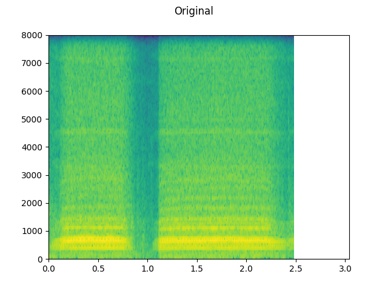
- 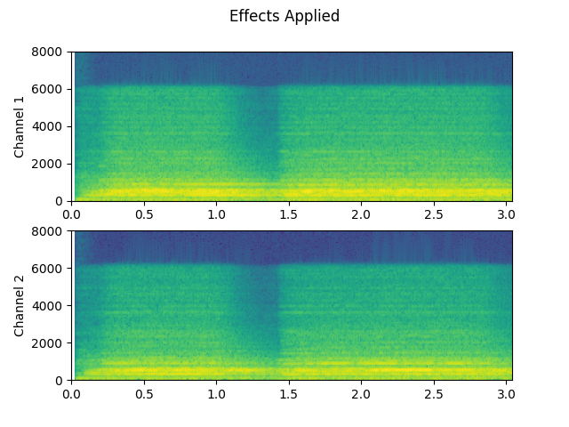
Out:
<IPython.lib.display.Audio object>
/opt/_internal/cpython-3.8.1/lib/python3.8/site-packages/matplotlib/axes/_axes.py:7580: RuntimeWarning: divide by zero encountered in log10
Z = 10. * np.log10(spec)
<IPython.lib.display.Audio object>
Simulating room reverberation¶
Convolution reverb is a technique that’s used to make clean audio sound as though it has been produced in a different environment.
Using Room Impulse Response (RIR), for instance, we can make clean speech sound as though it has been uttered in a conference room.
For this process, we need RIR data. The following data are from the VOiCES dataset, but you can record your own — just turn on your microphone and clap your hands.
sample_rate = 8000
rir_raw, _ = get_rir_sample(resample=sample_rate)
plot_waveform(rir_raw, sample_rate, title="Room Impulse Response (raw)", ylim=None)
plot_specgram(rir_raw, sample_rate, title="Room Impulse Response (raw)")
play_audio(rir_raw, sample_rate)
- 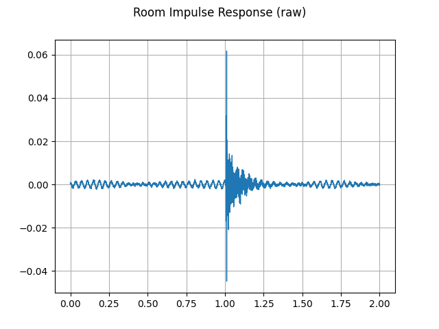
- 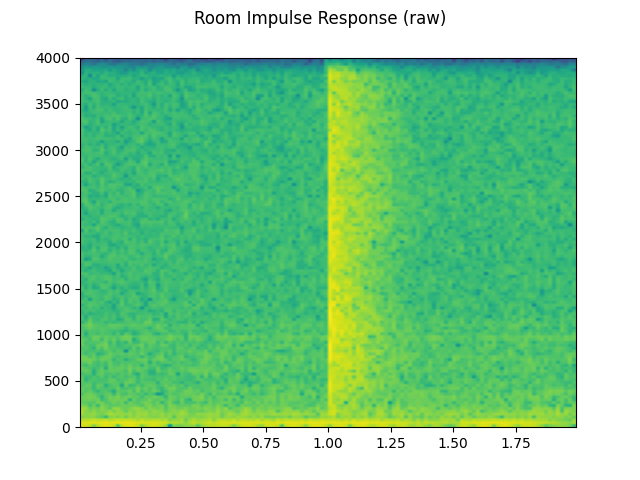
Out:
<IPython.lib.display.Audio object>
First, we need to clean up the RIR. We extract the main impulse, normalize the signal power, then flip along the time axis.
rir = rir_raw[:, int(sample_rate*1.01):int(sample_rate*1.3)]
rir = rir / torch.norm(rir, p=2)
rir = torch.flip(rir, [1])
print_stats(rir)
plot_waveform(rir, sample_rate, title="Room Impulse Response", ylim=None)
Out:
Shape: (1, 2320)
Dtype: torch.float32
- Max: 0.395
- Min: -0.286
- Mean: -0.000
- Std Dev: 0.021
tensor([[-0.0052, -0.0076, -0.0071, ..., 0.0184, 0.0173, 0.0070]])
Then, we convolve the speech signal with the RIR filter.
speech, _ = get_speech_sample(resample=sample_rate)
speech_ = torch.nn.functional.pad(speech, (rir.shape[1]-1, 0))
augmented = torch.nn.functional.conv1d(speech_[None, ...], rir[None, ...])[0]
plot_waveform(speech, sample_rate, title="Original", ylim=None)
plot_waveform(augmented, sample_rate, title="RIR Applied", ylim=None)
plot_specgram(speech, sample_rate, title="Original")
play_audio(speech, sample_rate)
plot_specgram(augmented, sample_rate, title="RIR Applied")
play_audio(augmented, sample_rate)
- 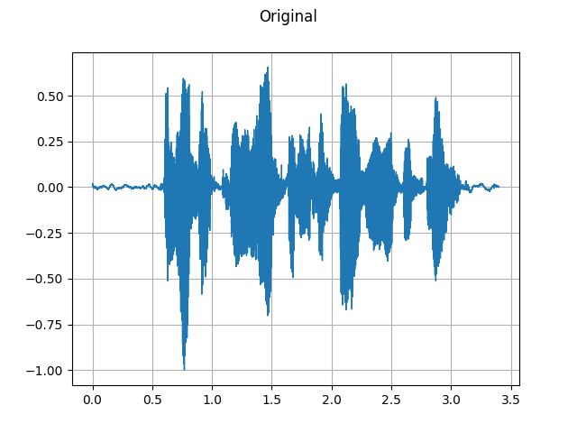
- 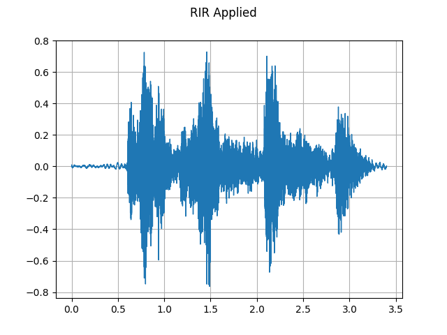
- 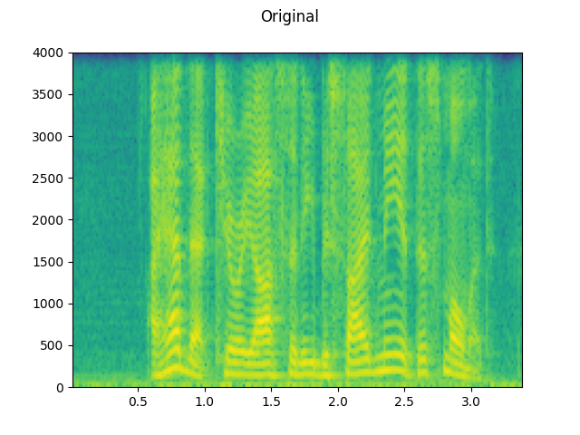
- 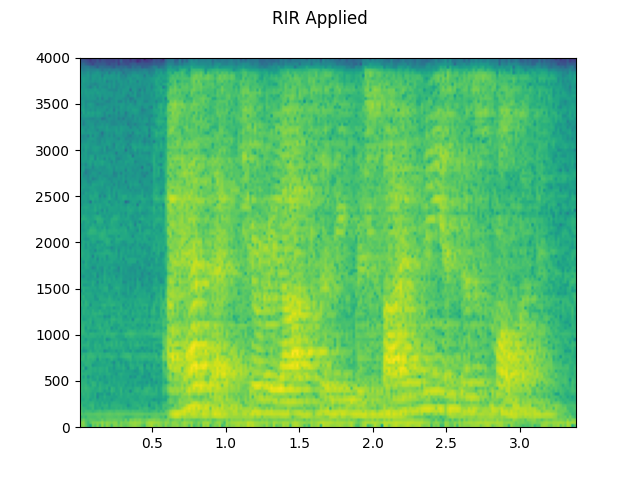
Out:
<IPython.lib.display.Audio object>
<IPython.lib.display.Audio object>
Adding background noise¶
To add background noise to audio data, you can simply add a noise Tensor to the Tensor representing the audio data. A common method to adjust the intensity of noise is changing the Signal-to-Noise Ratio (SNR). [wikipedia]
begin{align}mathrm{SNR} = frac{P_{mathrm{signal}}}{P_{mathrm{noise}}}end{align}
begin{align}{mathrm {SNR_{{dB}}}}=10log _{{10}}left({mathrm {SNR}}right)end{align}
sample_rate = 8000
speech, _ = get_speech_sample(resample=sample_rate)
noise, _ = get_noise_sample(resample=sample_rate)
noise = noise[:, :speech.shape[1]]
plot_waveform(noise, sample_rate, title="Background noise")
plot_specgram(noise, sample_rate, title="Background noise")
play_audio(noise, sample_rate)
speech_power = speech.norm(p=2)
noise_power = noise.norm(p=2)
for snr_db in [20, 10, 3]:
snr = math.exp(snr_db / 10)
scale = snr * noise_power / speech_power
noisy_speech = (scale * speech + noise) / 2
plot_waveform(noisy_speech, sample_rate, title=f"SNR: {snr_db} [dB]")
plot_specgram(noisy_speech, sample_rate, title=f"SNR: {snr_db} [dB]")
play_audio(noisy_speech, sample_rate)
- 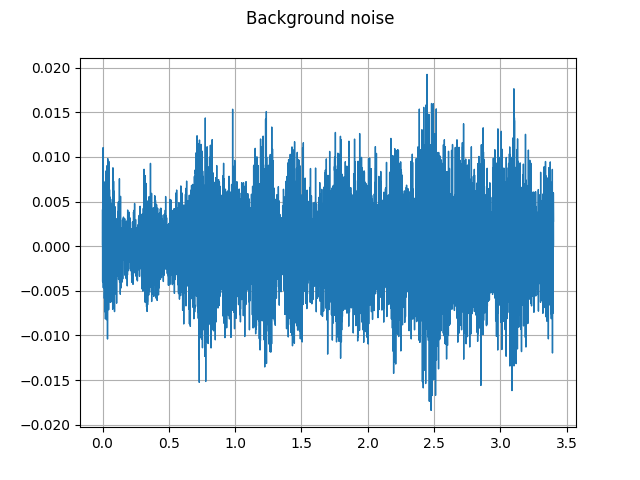
- 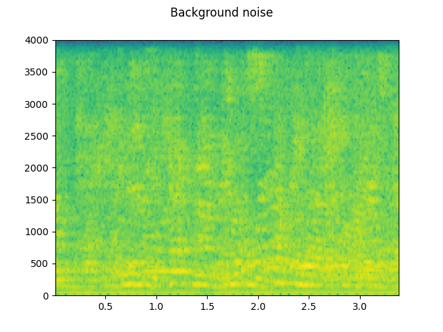
- 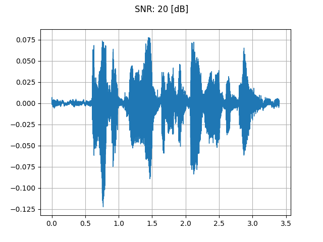
- 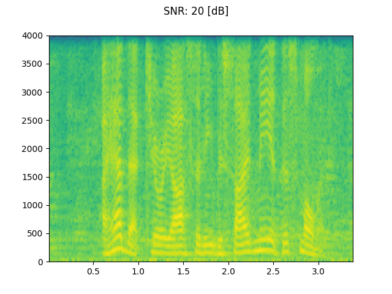
- 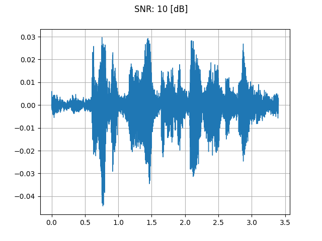
- 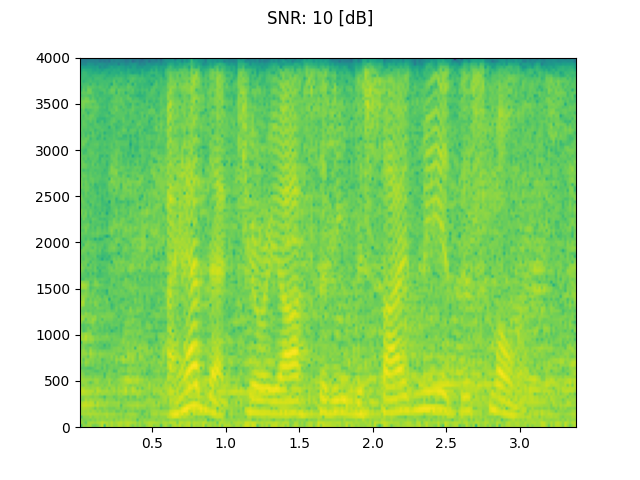
- 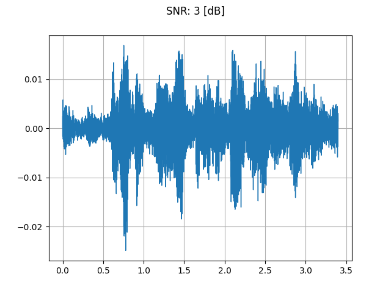
- 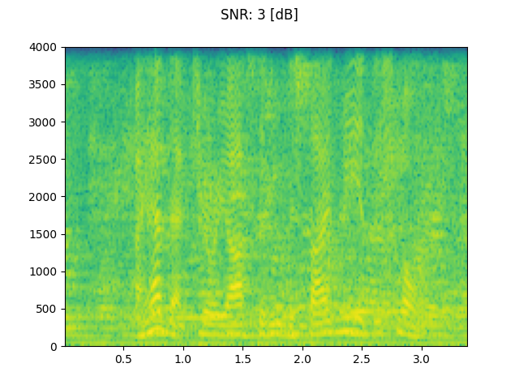
Out:
<IPython.lib.display.Audio object>
<IPython.lib.display.Audio object>
<IPython.lib.display.Audio object>
<IPython.lib.display.Audio object>
Applying codec to Tensor object¶
torchaudio.functional.apply_codec can apply codecs to a Tensor object.
Note This process is not differentiable.
waveform, sample_rate = get_speech_sample(resample=8000)
plot_specgram(waveform, sample_rate, title="Original")
play_audio(waveform, sample_rate)
configs = [
({"format": "wav", "encoding": 'ULAW', "bits_per_sample": 8}, "8 bit mu-law"),
({"format": "gsm"}, "GSM-FR"),
({"format": "mp3", "compression": -9}, "MP3"),
({"format": "vorbis", "compression": -1}, "Vorbis"),
]
for param, title in configs:
augmented = F.apply_codec(waveform, sample_rate, **param)
plot_specgram(augmented, sample_rate, title=title)
play_audio(augmented, sample_rate)
- 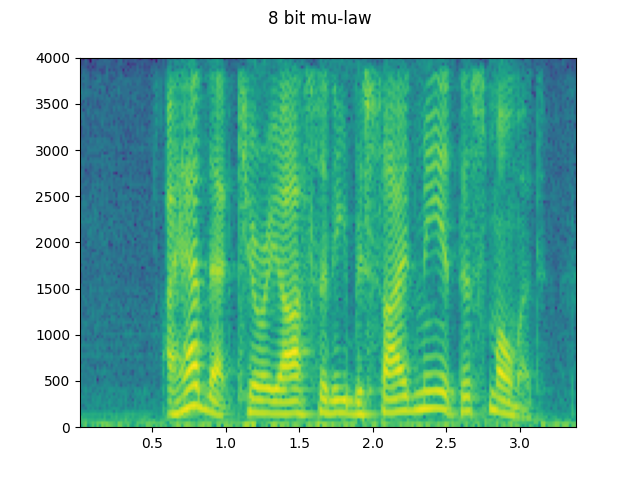
- 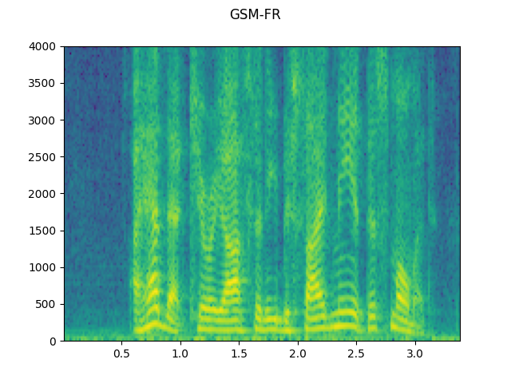
- 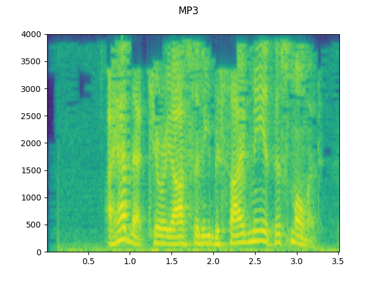
- 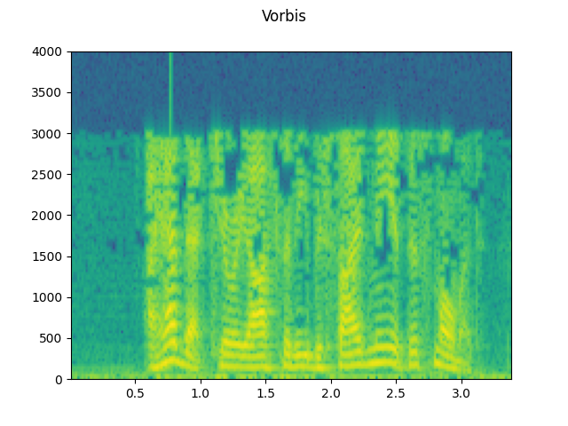
Out:
<IPython.lib.display.Audio object>
<IPython.lib.display.Audio object>
<IPython.lib.display.Audio object>
<IPython.lib.display.Audio object>
<IPython.lib.display.Audio object>
Simulating a phone recoding¶
Combining the previous techniques, we can simulate audio that sounds like a person talking over a phone in a echoey room with people talking in the background.
sample_rate = 16000
speech, _ = get_speech_sample(resample=sample_rate)
plot_specgram(speech, sample_rate, title="Original")
play_audio(speech, sample_rate)
# Apply RIR
rir, _ = get_rir_sample(resample=sample_rate, processed=True)
speech_ = torch.nn.functional.pad(speech, (rir.shape[1]-1, 0))
speech = torch.nn.functional.conv1d(speech_[None, ...], rir[None, ...])[0]
plot_specgram(speech, sample_rate, title="RIR Applied")
play_audio(speech, sample_rate)
# Add background noise
# Because the noise is recorded in the actual environment, we consider that
# the noise contains the acoustic feature of the environment. Therefore, we add
# the noise after RIR application.
noise, _ = get_noise_sample(resample=sample_rate)
noise = noise[:, :speech.shape[1]]
snr_db = 8
scale = math.exp(snr_db / 10) * noise.norm(p=2) / speech.norm(p=2)
speech = (scale * speech + noise) / 2
plot_specgram(speech, sample_rate, title="BG noise added")
play_audio(speech, sample_rate)
# Apply filtering and change sample rate
speech, sample_rate = torchaudio.sox_effects.apply_effects_tensor(
speech,
sample_rate,
effects=[
["lowpass", "4000"],
["compand", "0.02,0.05", "-60,-60,-30,-10,-20,-8,-5,-8,-2,-8", "-8", "-7", "0.05"],
["rate", "8000"],
],
)
plot_specgram(speech, sample_rate, title="Filtered")
play_audio(speech, sample_rate)
# Apply telephony codec
speech = F.apply_codec(speech, sample_rate, format="gsm")
plot_specgram(speech, sample_rate, title="GSM Codec Applied")
play_audio(speech, sample_rate)
- 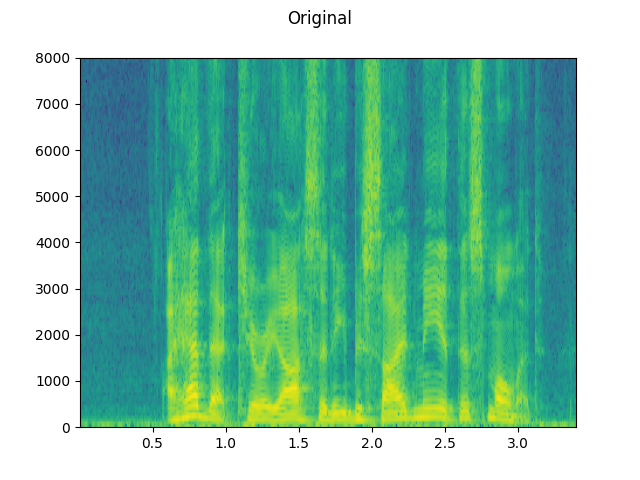
- 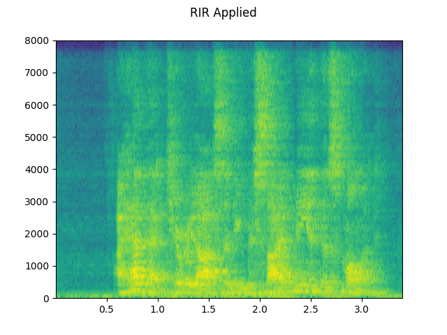
- 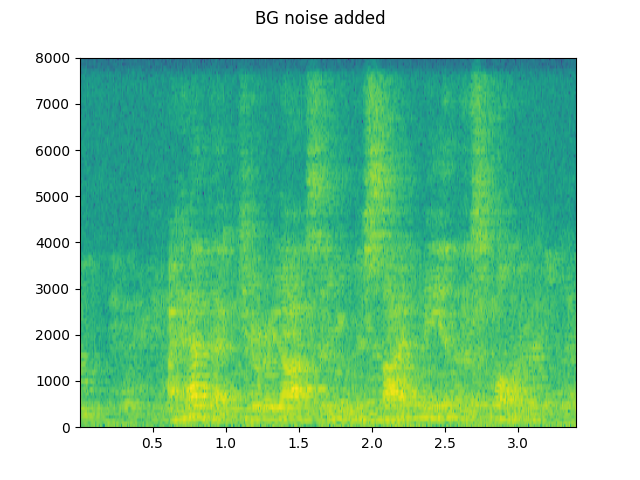
- 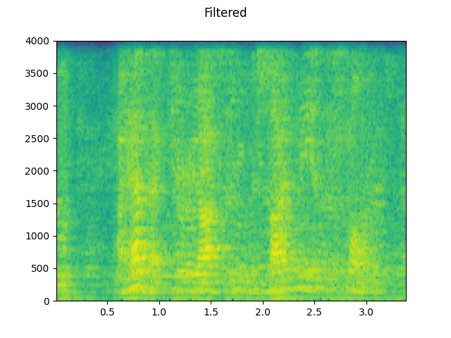
- 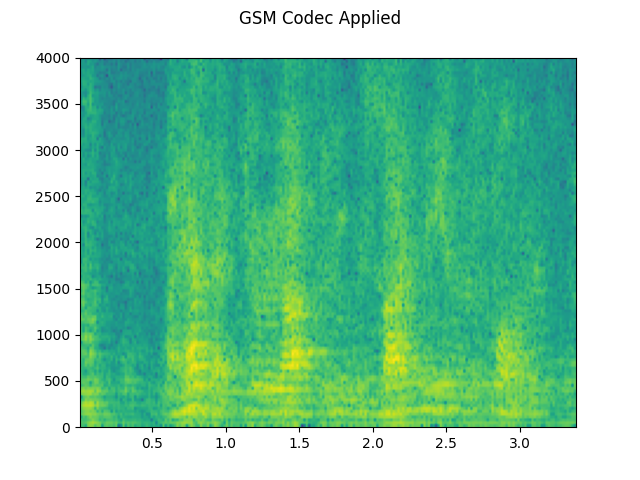
Out:
<IPython.lib.display.Audio object>
<IPython.lib.display.Audio object>
<IPython.lib.display.Audio object>
<IPython.lib.display.Audio object>
<IPython.lib.display.Audio object>
Total running time of the script: ( 0 minutes 7.465 seconds)